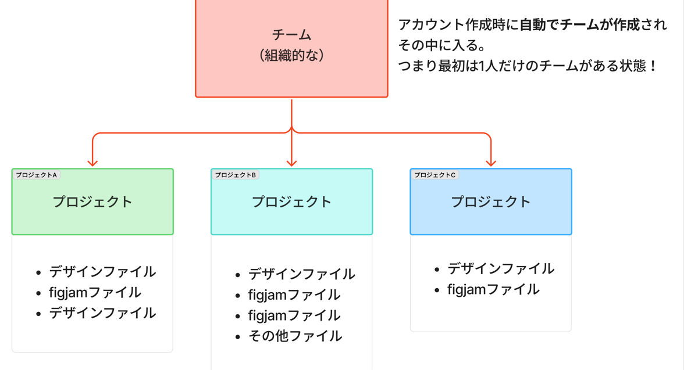
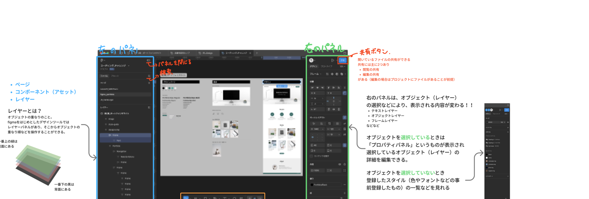
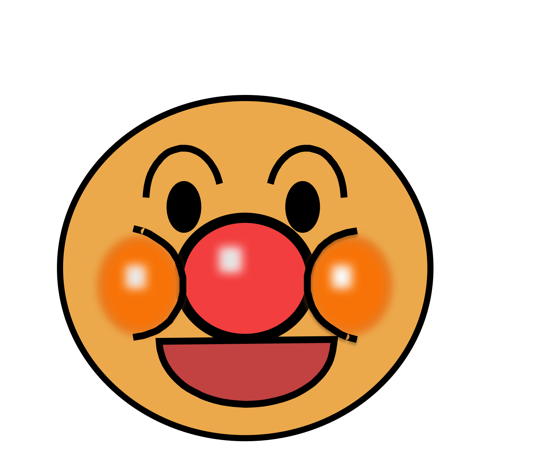

訓練校 IT スクール｜全6時間の集中授業
HTML/CSSはひと段落、ここからデザインツール「Figma」の基礎を覚えていく。操作方法のカリキュラムなので、「どんなサイトを作りたいか」は普段から自分で考えておく必要あり。Figmaはアップデートがえげつないので、教科書と現バージョンに差がある→先生の画面が真。
| 時間 | セクション |
|---|---|
| 1時間目 | ホーム画面・Community・デザインシステム |
| 1〜2時間目 | ファイルの階層構造（チーム→プロジェクト→ファイル） |
| 2時間目 | インターフェース（ツールバー／左右パネル） |
| 3時間目 | 選択ツール・移動・拡大縮小 |
| 3時間目 | シェイプ・色塗り・複製 |
| 4時間目 | 画像配置（2種類） |
| 4時間目 | テキストツール・タイポグラフィ |
| 5時間目 | エフェクト（影・ぼかし）・アンパンマン演習 |
Figmaの起動直後の画面。左にメニュー、右にダッシュボード。タブはChromeと同じ感覚（固定・複数開ける）。アカウントは複数登録できる（会社用＋個人用など）。
Figmaのファイル管理はFigma上で完結する（FinderやVS Codeではいじらない）。全部Figmaのサーバーに保管・自動保存。「保存ボタン」はない。

| 階層 | 意味 |
|---|---|
| チーム | 組織的なもの。アカウント作成時に自動で1つ作られる（最初は1人だけ） |
| プロジェクト | ディレクトリ感覚。仕事ごと・クライアントごとに分ける |
| デザインファイル | Figmaのデザインデータ |
| FigJamファイル | ホワイトボード形式のファイル |
| ドラフト | 個人用（自分だけ触る）。プロジェクトとは別管理 |
プロジェクトで共同編集する場合：3ファイルまで・各ファイル3ページまで。ドラフトなら無制限。チームへのメンバー招待は有料プラン。
ファイル＞ページ＞レイヤー の構造で、各ページにはレイヤー（オブジェクト）が並ぶ。訓練校のカンプは「PC / SP / ワイヤーフレーム」の3ページ構成。

| 場所 | 役割 |
|---|---|
| ツールバー（上） | 移動・シェイプ・テキスト・ペン等のツール |
| 左のパネル | ページ／コンポーネント（アセット）／レイヤー／検索 |
| 右のパネル | 選択中のオブジェクトのプロパティ（編集可能項目）。選択するものによって表示が変わる |
| 中央 | ワークスペース（作業画面） |
| 共有ボタン | 右上の目立つ色のボタン。閲覧共有 or 編集共有 |
うまく使いこなしている人は必ずレイヤーパネルを見ている。見えてるものだけで作業しようとすると、レイヤーが汚くなったり、選択解除を見落としたりする。選択状態は右パネルで青くハイライトされる。
プロトタイプ（リンク疑似実装）・開発モード（有料・エンジニア向け）もあるが、今は触れる程度でOK。Figma Drawは新機能だがおまけ程度。
| 操作 | やり方 |
|---|---|
| 選択ツール（移動ツール） | V |
| 複数選択 | Shift + クリック / ドラッグで範囲選択（青枠） |
| 選択済みを部分解除 | Shift + 該当オブジェクトをクリック |
| 選択解除 | 何もないところをクリック |
| 拡大縮小 | Cmd + マウスホイール（Macトラックパッドはピンチイン/アウト） |
| 横方向スクロール | Cmd + Shift + ホイール |
| 手のひツール（画面移動） | Spaceを押し込み中 → ドラッグ |
| ショートカット一覧 | ヘルプ → キーボードショートカット |
トラックボール民はFigmaなら大丈夫だが、Illustrator等になると一癖あって厳しいので、安物のマウスでも1個持っておくと便利。
| 図形 | ショートカット |
|---|---|
| 長方形（Rectangle） | R |
| 楕円（楕円系） | O |
| ライン | L |
| 多角形・星・矢印 | トグルから（あまり使わない） |
複数レイヤーを1つにまとめる時、先生は「統合」はしない。編集ファイル中は編集しづらくなるから。Figmaでは「グループ化」ではなく「フレームでまとめる」と呼ぶ。納品時にどうしてもと言われた場合のみ統合。
Figmaの画像配置は2パターンあって特殊。シーンによって使い分ける。
| 方法 | 挙動・使い所 |
|---|---|
| ① ドラッグ&ドロップ | FinderからFigmaへドラッグ → 画像の実寸サイズで配置。メインビジュアル等、大きめの画像 |
| ② 塗りから配置 | 四角を描く → 塗り→画像でアップロード → 枠に合わせてカバー表示（CSSの object-fit: cover 相当）。サムネ・カード画像 |
②の塗りから配置する方法は、塗りが先に存在していないと使えない。塗りを削除してしまうと画像も配置できなくなる。覚えておく。
配置後はダブルクリックで画像内の位置・拡大率を調整可能（background-positionのニュアンス）。簡単な画像加工（コントラスト等）も可能だが本格的にはPhotoshop。
Tでテキストツール。打ち込みたい場所でクリック→入力。右パネルの「タイポグラフィ」でフォント・サイズ・ウェイト・行間・字間を編集。
Figmaで選んだフォントはそのままコーディングで使えないといけない。マイナーフォントを選ぶとエンジニアから「このフォント無いぞ」と言われる。Google Fonts（Noto Sans JP 等）を選んでおけば間違いない。
| 項目 | 意味 |
|---|---|
| ラインハイト | 150% ＝ line-height: 1.5 |
| レタースペーシング | 5% ＝ letter-spacing: 0.05em |
| 幅の自動調整 | 開業しない限り横に伸びる。タイトル系に使う |
| 高さの自動調整 | 幅を固定して縦に伸びる。カード内テキストに使う（テキストボックス感覚） |
| エフェクト | 意味 |
|---|---|
| ドロップシャドウ | 影。X/Y/ぼかし/広がり/色を指定（box-shadow相当） |
| インナーシャドウ | 内側に影 |
| レイヤーブラー | オブジェクト自体をぼかす |
| 背景のぼかし | 重なっている背面をぼかす（すりガラス効果） |
楕円と重なり順を駆使してアンパンマンの顔を作る練習。レイヤー名を必ず変えるのがポイント（eyes-left / eyes-right / outline / nose / mouth など）。

「フレーム」「フレーム」みたいに同名だらけだとどれがどれだか分からない。プロは絶対やっている。教科書ですらできていない例として紹介。癖をつけるのが今のうち。やり過ぎぐらいでOK。
余裕がある人は曲線をペンツール（P）でチャレンジ。クリックではなくドラッグから始めると方向線（ハンドル）が出てベジェ曲線になる。難しいのでイラレ授業まで保留でOK。
| 用語 | 意味 |
|---|---|
| チーム / プロジェクト / ファイル | Figmaの階層（組織/仕事単位/データ） |
| ドラフト | 個人用ファイル置き場（共同編集しないもの） |
| FigJam | ホワイトボード形式のFigmaファイル |
| Community（コミュニティ） | 世界中のクリエイター作品庫 |
| デザインシステム | 色・フォント・余白などのルール集 |
| レイヤー | オブジェクトの重なり順を操作する単位 |
| ツールバー | 上部のツール選択欄 |
| プロパティパネル（右） | 選択オブジェクトの編集項目（変動） |
| オートレイアウト | flex的な横並び・縦並び＋ギャップ |
| シェイプツール | 図形作成（R/O/L） |
| ベジェ曲線 | ペンツールで描く曲線（点と方向線で制御） |
| 幅 / 高さの自動調整 | テキストボックスの伸縮方向 |
| ドロップシャドウ | 影のエフェクト（box-shadow相当） |
| 背景のぼかし | すりガラス効果 |
| フレーム化 | Figmaでの「グループ化」 |
| プロトタイプ | リンクやホバーの疑似的な実装 |
| 開発モード（Dev Mode） | 有料・エンジニア向けの仕様確認画面 |
「レイヤーパネルから目をそらすな。うまい人は絶対そらしていない。」
→ 今日いちばんのメモ。プロは見えてるものだけで判断しない。
「レイヤー名を変えないデザイナーは、厳しいこと言いますけど仕事ができない。」
→ 「フレーム」「フレーム」だらけのレイヤーパネルはNG。最初のうちにクセを。
「Figmaのアップデートはえぐいぐらい早い。数年前までは毎日アップデートでした。」
→ 教科書とUIに差が出るのはしょうがない。先生の画面を真とする。
「結論Googleフォントを選んでおけば間違いないです。」
→ コーディング時にフォントが無くて困る事故を回避する一番確実な対策。